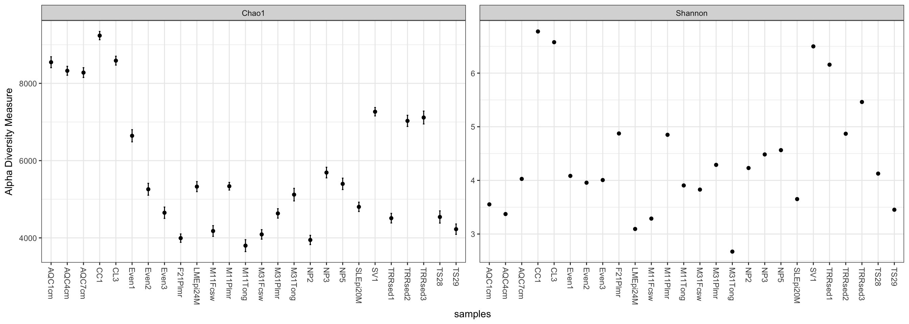
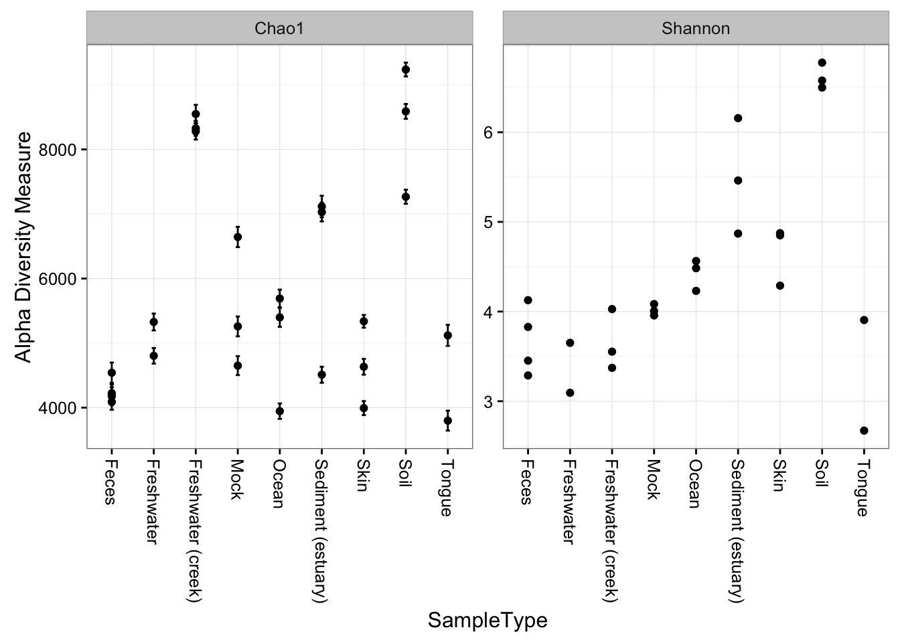
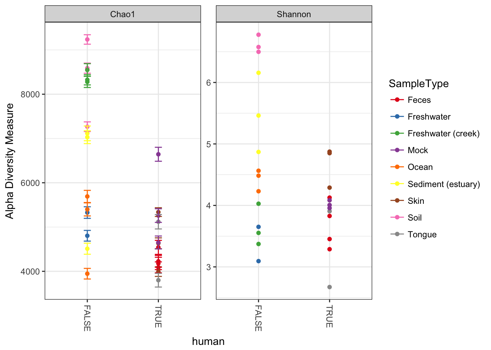
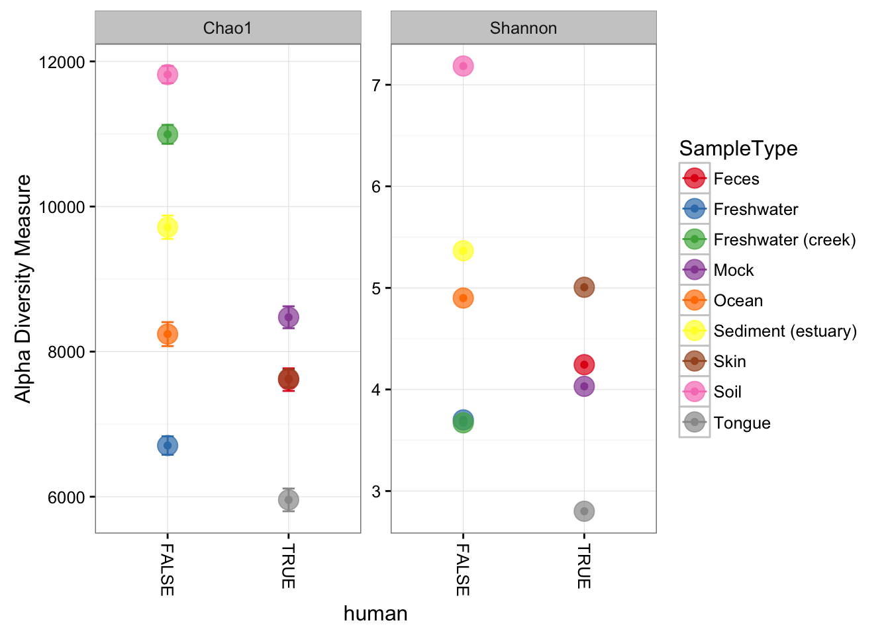

Alpha diversity graphics
Examples using the plot_richness function.
Although the function name includes the word richness, which usually refers to the total number of species/OTUs/taxa in a sample or environment – either observed or estimated – this is actually a wrapper for all descriptions of alpha diversity. The name of this function may be changed in future versions to reflect this and avoid confusion.
Load packages, set parameters
As usual, we must start by loading the phyloseq package, and then the dataset, in this case "GlobalPatterns".
library("phyloseq"); packageVersion("phyloseq")## [1] '1.22.3'data("GlobalPatterns")Some ggplot2 theming. First load the ggplot2 package.
library("ggplot2"); packageVersion("ggplot2")## [1] '2.2.1'theme_set(theme_bw())
pal = "Set1"
scale_colour_discrete <- function(palname=pal, ...){
scale_colour_brewer(palette=palname, ...)
}
scale_fill_discrete <- function(palname=pal, ...){
scale_fill_brewer(palette=palname, ...)
}Prepare data
Since we are interested in alpha diversity, it is probably not a bad idea to prune OTUs that are not present in any of the samples (for some reason there are a few in "GlobalPatterns") – BUT DON’T TRIM MORE THAN THAT! I know it is tempting to trim noise right away, but many richness estimates are modeled on singletons and doubletons in the abundance data. You need to leave them in the dataset if you want a meaningful estimate.
GP <- prune_species(speciesSums(GlobalPatterns) > 0, GlobalPatterns)## Warning: 'prune_species' is deprecated.
## Use 'prune_taxa' instead.
## See help("Deprecated") and help("phyloseq-deprecated").## Warning: 'speciesSums' is deprecated.
## Use 'taxa_sums' instead.
## See help("Deprecated") and help("phyloseq-deprecated").Plot Examples
Here is the default graphic produced by the plot_richness function on the GP example dataset:
plot_richness(GP)## Warning: Removed 130 rows containing missing values (geom_errorbar).
Note that in this case, the Fisher calculation results in a warning (but still plots). We can avoid this by specifying a measures argument to plot_richness, which will include just the alpha-diversity measures that we want.
plot_richness(GP, measures=c("Chao1", "Shannon"))## Warning: Removed 26 rows containing missing values (geom_errorbar).
We can specify a sample variable on which to group/organize samples along the horizontal (x) axis. An experimentally meaningful categorical variable is usually a good choice – in this case, the "SampleType" variable works much better than attempting to interpret the sample names directly (as in the previous plot):
plot_richness(GP, x="SampleType", measures=c("Chao1", "Shannon"))## Warning: Removed 26 rows containing missing values (geom_errorbar).
Now suppose we wanted to use an external variable in the plot that isn’t in the GP dataset already – for example, a logical that indicated whether or not the samples are human-associated. First, define this new variable, human, as a factor (other vectors could also work; or other data you might have describing the samples).
sampleData(GP)$human <- getVariable(GP, "SampleType") %in% c("Feces", "Mock", "Skin", "Tongue")## Warning: 'getVariable' is deprecated.
## Use 'get_variable' instead.
## See help("Deprecated") and help("phyloseq-deprecated").## Warning: 'sampleData' is deprecated.
## Use 'sample_data' instead.
## See help("Deprecated") and help("phyloseq-deprecated").## Warning: 'sampleData<-' is deprecated.
## Use 'sample_data<-' instead.
## See help("Deprecated") and help("phyloseq-deprecated").Now tell plot_richness to map the new human variable on the horizontal axis, and shade the points in different color groups, according to which "SampleType" they belong.
plot_richness(GP, x="human", color="SampleType", measures=c("Chao1", "Shannon"))## Warning: Removed 26 rows containing missing values (geom_errorbar).
We can merge samples that are from the environment (SampleType), and make the points bigger with a ggplot2 layer. First, merge the samples.
GPst = merge_samples(GP, "SampleType")
# repair variables that were damaged during merge (coerced to numeric)
sample_data(GPst)$SampleType <- factor(sample_names(GPst))
sample_data(GPst)$human <- as.logical(sample_data(GPst)$human)Now we can plot this environment-merged version of the data. First store the default ggplot graphic as p, then add an additional geom_point layer with a large size and slight transparency.
p = plot_richness(GPst, x="human", color="SampleType", measures=c("Chao1", "Shannon"))
p + geom_point(size=5, alpha=0.7)## Warning: Removed 9 rows containing missing values (geom_errorbar).
More details about ggplot2
For those interested in why this works so concisely (p + geom_point(size=4, alpha=0.7)), it is because the rest of the aesthetic mapping and data are contained in the ggplot object, p, and so is inherited in the call to the ggplot2 geometric object layer function, geom_point, by default since we didn’t specify alternative aes or data arguments. Although we could have if we wanted to. This perhaps sounds more confusing than it is, and I find it easier to understand by inspecting the examples I’ve shown here.
You’ll also notice that the original smaller points are still on the plot. This is because they were the first layer, and our larger points are semi-transparent. I find this kind of distracting, and doesn’t add any information or clarity. The good news is that layers can be removed from a ggplot object with standard list notation (using the dollar sign $).
First, check which lists are present in p.
p$layers## [[1]]
## geom_point: na.rm = TRUE
## stat_identity: na.rm = TRUE
## position_identity
##
## [[2]]
## mapping: ymax = value + se, ymin = value - se
## geom_errorbar: na.rm = FALSE, width = 0.1
## stat_identity: na.rm = FALSE
## position_identityWe can see that the first layer is the one specifying the original points, which are small. We can use negative indexing to “pop” it out, then add a new geom_point layer with larger point size (the following two lines).
p$layers <- p$layers[-1]
p + geom_point(size=5, alpha=0.7)## Warning: Removed 9 rows containing missing values (geom_errorbar).